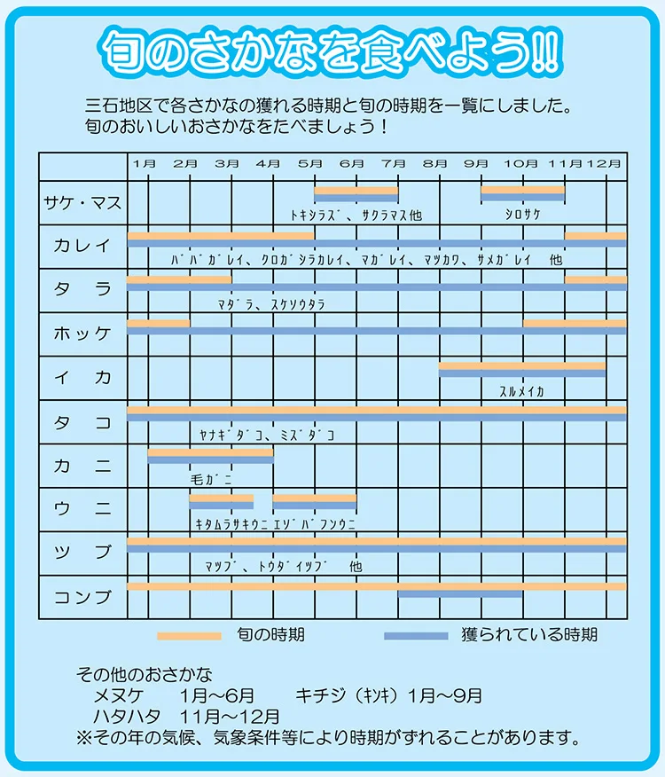
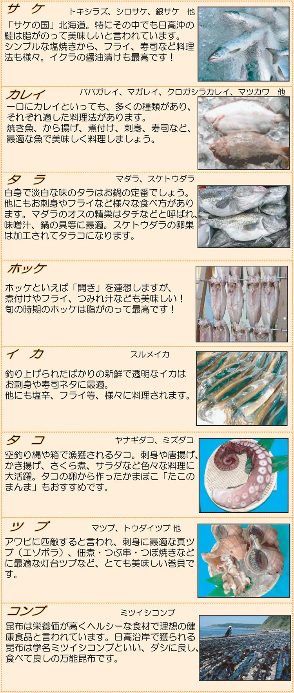
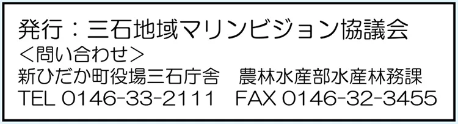

三石地域マリンビジョン協議会
三石漁港を拠点に、漁業の担い手確保、安全な水産物の供給、地産地消の推進などを目的に活動すると現サイトで紹介されています。
地産地消の取り組み
地域で生産したものを地域で消費するため、おさかなマップの発行や料理教室などが紹介されています。資料を通して、三石の海と地域の食のつながりを知ることができます。
資料の見方
下の画像を押すと、読みやすい大きさで開きます。掲載されている店舗・施設の現況は、別途確認してください。
資料を大きく見る
現サイトに掲載された写真・資料です。画像を押すと大きく表示します。過去の価格・日程・店舗情報は現在と異なる場合があります。



掲載元と確認について
内容・写真・名簿の参照：現サイトの「三石おさかなマップ」 ↗
Web掲載内容の確認日：2026年10月19日。現行の制度・営業・イベント予定を直接確認したものではありません。